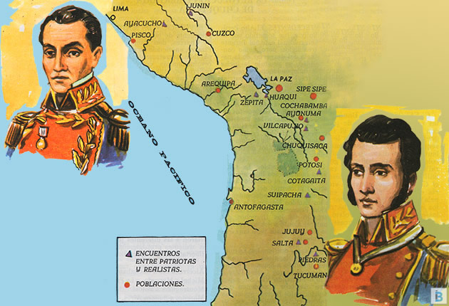
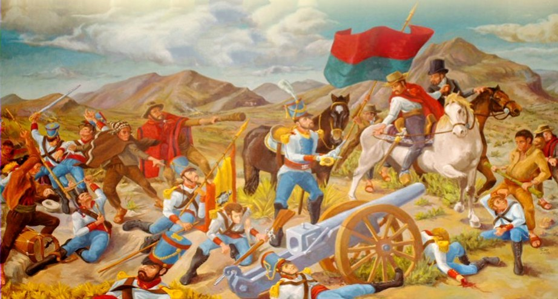
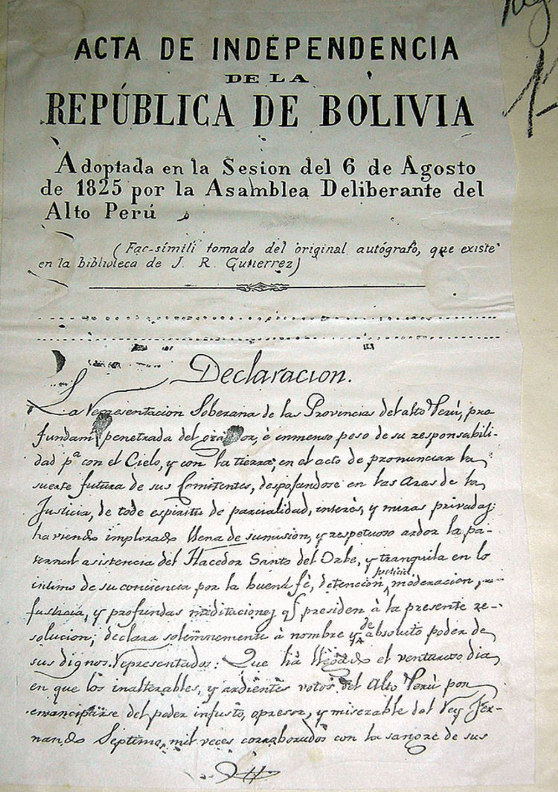

Independencia de la República de Bolivia
El territorio de Bolivia se formó en base a pueblos aimaras que constituían el Kollasuyo, y que vivieron a orillas del Lago Titicaca, extendiendo su influencia hasta las costas del Océano Pacífico. Los pueblos que integraban el Gran Kollasuyo estaban los Ayaviri, el Colla, del que ha tomado nombre toda la región, los Omasuyos, los Lupacas, Larecajas, Pacajes, Charcas y Chichas. Luego, con la llegada de los Incas, todos estos pueblos fueron sometidos bajos sus leyes. Durante la conquista esta vasto territorio llegó a depender del virreinato del Perú. Posteriormente, creado el virreinato del Río de La Plata, en 1776, el Alto Perú o Bolivia pasó a ser parte de este último, comprendiendo las intendencias de Potosí, Cochabamba, Chuquisaca y La Paz, y las provincias de Moxos y Chuiquitos, que formaban parte de la intendencia de Cochabamba. Todos estos territorios, al separarse del Río de La Plata y del Bajo Perú, se constituyeron en la República de Bolivia. Durante la conquista Francisco Pizarro envió a su hermano Gonzalo a la conquista de los Charcas o Collao en 1538. Alonso de Mendoza llegó a La Paz en 1548, en representación de don Pedro de la Gasca. A Santa Cruz en 1560, llegó Ñuflo Chávez. Tristán de Tejada y Juan Salinas, llegaron a Trinidad en 1566. A Cochabamba llega el español Sebastián Barba de Padilla el 1º de enero de 1574. Manuel Castro y Padilla llega a Oruro en 1606. Potosí es fundada por Juan de Villarroel y Diego Centeno en 1546. Un año después, el emperador Carlos V de España le concedió el título de "Villa Imperial". En 1561 se instaló en la ciudad de La Plata (actual Sucre) la Real Audiencia de Charcas, suprema autoridad judicial del Alto Perú. Atendiendo la necesidad de crear un nuevo centro administrativo regional desde donde se pudiera controlar con el debido cuidado y atención la zona de mayor producción de plata. Es así, como el colonialismo español toma asiento en esta parte de América, atraído por los grandes yacimientos de oro y plata que lo convirtieron posteriormente en un país netamente minero. A las ciudades fundadas se las dotó de cabildos, funcionarios de justicia, como el alguacil mayor, alcaldes de primero y segundo voto y autoridades militares. Como es natural, una autoridad impuesta por la fuerza donde el abuso y la prepotencia, la imposición de una cultura y religión ajena al de los indígenas, más los servicios obligatorios de la mita y de la encomienda, despertaron con el tiempo un sentimiento de profundo resentimiento y rencor hacia el poder español.
En los Albores de la Independencia
A raíz de todas estas medidas represivas que impusieron los españoles, surgieron desde 1780 una serie de rebeliones que inquietaron el virreinato del Perú y la Audiencia de Charcas. Un año después, el 15 de enero de 1781, la sublevación de Chayanta se tornó más violenta, donde los hermanos Tomás, Damaso y Nicolás tomaron el mando militar ocupando el asiento minero de Aullagas. Una de las rebeliones más dramáticas fue la gestó Túpac Catari, al cercar a la ciudad de La Paz, durante 109 días. Reprimido violentamente el movimiento indígena, sus principales gestores fueron ejecutados el 13 de noviembre de 1781. Llegamos al año 1809, cuando en La Paz un grupo de revolucionarios al mando de don Pedro Domingo Murillo lanzan al mundo, la primera proclama declarando abiertamente la independencia del Alto Perú del dominio español.
Los sucesos de 1809 sirvieron como elemento detonante para que Buenos Aires se declarara independiente del gobierno español en 1810, y a la vez, diferentes ciudades del Alto Perú promovieron una serie de pronunciamientos. Argentina temía la incursión de los realistas a su territorio poniendo en peligro su independencia y, con el propósito de asegurarla envió hacia el Alto Perú sus Ejército Auxiliares. El primero de ellos llegó al mando de Juan José Castelli, derrotando a los realistas en la batalla de Suipacha, el 7 de noviembre de 1810. Mientras tanto, desde el Perú, el general español José Manuel Goyeneche con un gran ejército logró derrotar a las tropas argentinas en la batalla de Guaqui, el 20 de junio de 1811. El Segundo Ejército Auxiliar al mando del general Manuel Belgrano, ingresó a territorio de Charcas, el 7 de mayo de 1813, después de derrotar al general español Pío de Tristán, quien había perseguido a Castelli hasta territorio argentino. Belgrano tampoco tuvo éxito en esta campaña porque fue derrotado en Vilcapujio el 1º de noviembre de 1813, y por segunda vez en Ayohuma el 14 de noviembre del mismo año. El Tercer Ejército Auxiliar al mando del general José Rondeau, ingresó al Alto Perú después de vencer a los realistas en la Quiaca, el 17 de abril de 1815. En su avance hacia Cochabamba fue derrotado en Sipe Sipe, el 29 de noviembre de 1815 por Joaquín de la Pezuela, quien había reemplazado a Tristán por su mala campaña militar emprendida en contra lo ejércitos argentinos.
El Papel de las Guerrillas
Al margen de las incursiones del ejército argentino a territorio alto peruano, las guerrillas desempeñaron un papel sumamente importante en la consecución de la independencia de nuestro territorio. El cura Ildefonso de las Muñecas cubrió el norte del Lago Titicaca, Sorata y Yavi; en el sudeste, entre Camargo y Cotagaita estaba Vicente Camargo, entre los río Grande y Pilcomayo, y en la Laguna Combatían los esposos Padilla; en el este entre Valle Grande y Santa Cruz de la Sierra, ponía en jaque a las autoridades españolas, el valiente guerrillero Ignacio Warnes, y por último en el sur o sea en Tarija estaban Eustaquio Méndez, Manuel Rojas y Francisco Uriondo. Fracasada la intervención militar de los tres Ejército Auxiliares, Pezuela el comandante español que logró derrotar a Rondeau, ante la súbita aparición de grupos guerrilleros en casi todo el territorio del Alto Perú, organizó una cruenta arremetida entre los años 1815 y 1816, logrando paralizar prácticamente toda actividad subversiva y dando muerte a sus principales líderes como Padilla, quien cayó heroicamente en El Villar bajo la espada del comandante realista Aguilera, el 14 de septiembre de 1816. Vicente Camargo e Ignacio Warnes, también fueron derrotados sangrientamente por los españoles. Paralizadas las actividades de los guerrilleros, desde la Argentina, José de San Martín organizar un poderoso ejército y cruza la cordillera de los Andes, logrando la independencia de Chile el 12 de febrero de 1818. De allí victorioso en 1820 emprende una vasta campaña militar con el propósito de liberar al Perú. El ejército de San Martín luego de numerosos batallas hizó su entrada triunfal en la capital del virreinato el 12 de julio de 1821.
Si no entendiste bien puedes ver los siguientes videosa
Haz clic en los enlaces para ver los videos en YouTube